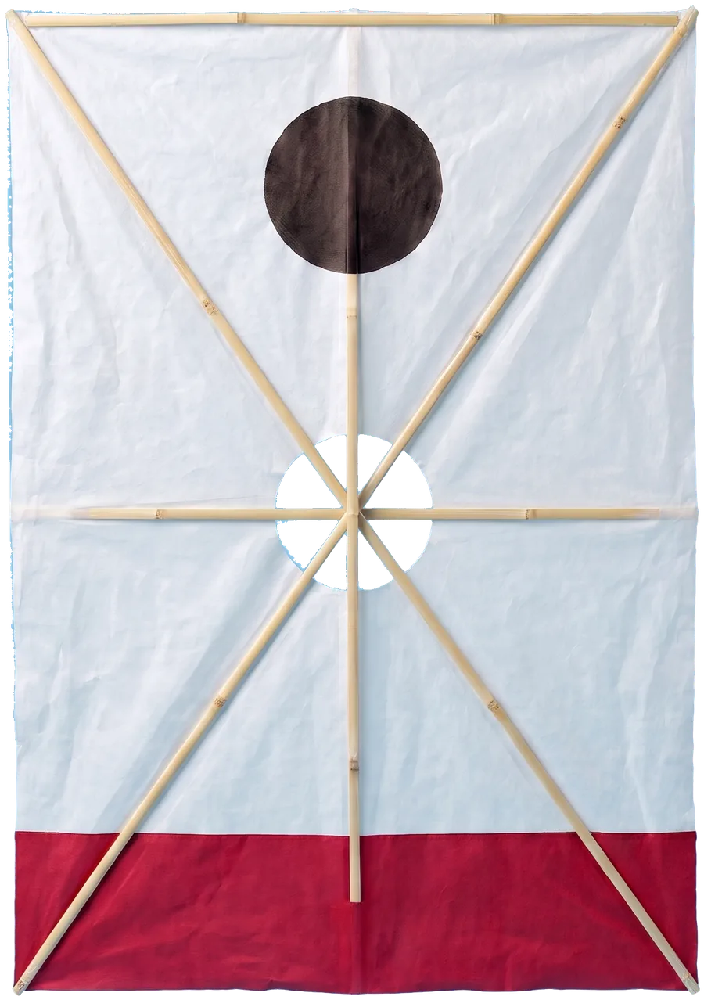
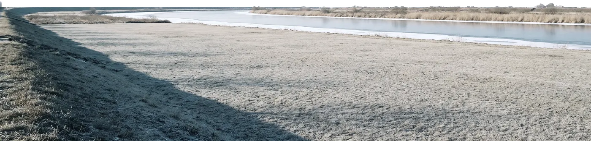
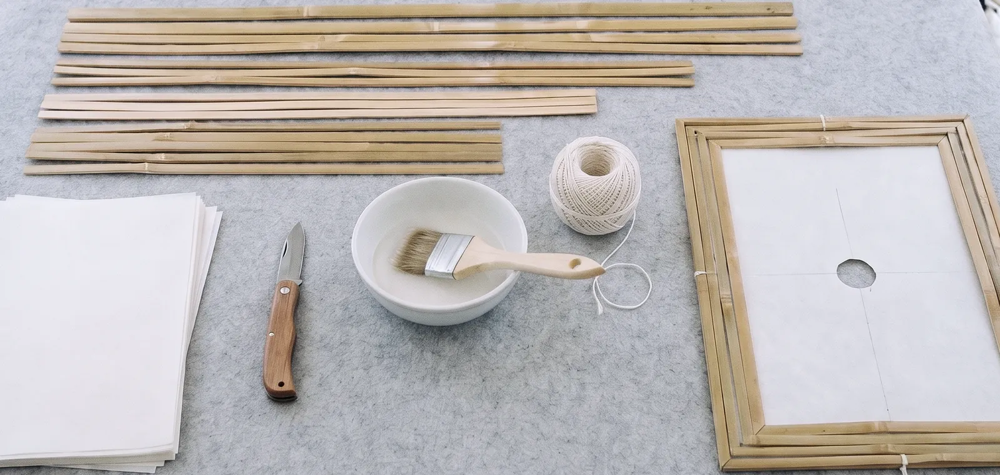
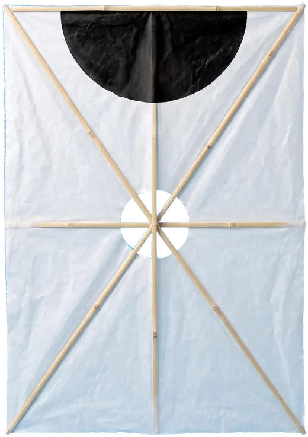
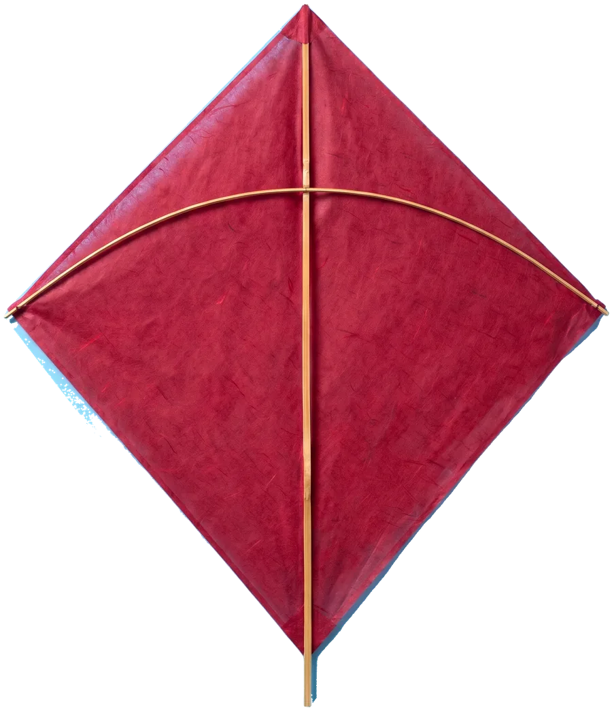
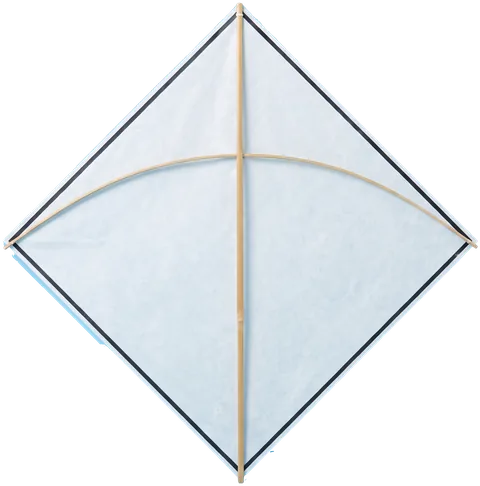
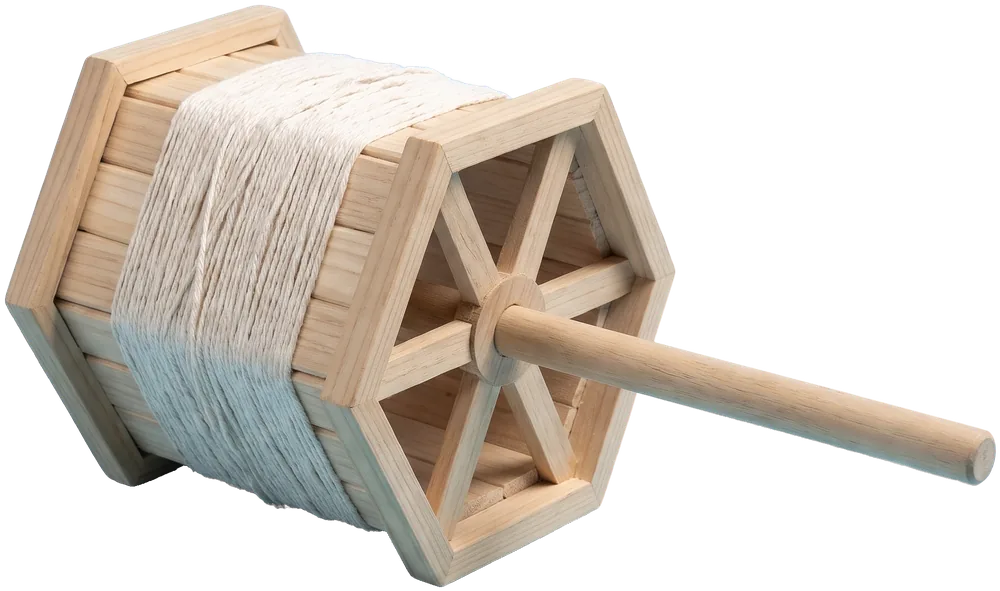

방패연
먹꼭지 치마연
가운데 뚫린 방구멍으로 바람이 빠져, 센 바람에도 버티고 줄을 당기고 풀어 마음대로 몹니다. 연싸움에 쓰는 연입니다.
- 크기
- 가로 44, 세로 66 cm
- 살
- 대나무 다섯 대
- 방구멍
- 지름 10 cm
- 꼬리
- 없음
- 누구에게
- 날려 본 사람, 겨루기 참가자

제5회 하늬강 정월 연날리기
2.20 토 2.21 일
2027년, 21일이 정월대보름
정월 대보름 주말, 강가 풀밭에서 연을 만들고 띄우고 겨룹니다. 연이 없으면 빌려 드리고, 처음이면 공방에서 대나무 살부터 깎아 봅니다. 마지막 날 다섯 시에는 다 같이 줄을 끊어 한 해의 액을 날려 보냅니다.
이틀 동안 하는 일이 화면의 바람
산들바람 초속 3.8 m
커서를 휘저으면 돌풍이 붑니다.
토요일은 만들고 띄우고 겨루는 날, 일요일 정월대보름은 겨루기 결승과 액막이연으로 끝나는 날입니다. 날리기 마당과 연 빌려 주는 곳은 이틀 내내 엽니다.

가오리연과 꼬리연 400개를 얼레와 함께 빌려 드립니다. 이름이나 전화번호는 적지 않습니다. 천막 번호표를 받아 가고, 연을 돌려줄 때 번호표를 냅니다. 무료입니다.
바람둔치에서 볼 연과 얼레입니다. 모두 대나무 살에 한지를 붙여 만들고, 줄은 무명실을 씁니다. 공방에서 만들거나 빌려서 날릴 수 있습니다.

먹꼭지 치마연
가운데 뚫린 방구멍으로 바람이 빠져, 센 바람에도 버티고 줄을 당기고 풀어 마음대로 몹니다. 연싸움에 쓰는 연입니다.

방패연과 같은 몸에 머리만 검은 반달로 칠했습니다. 겨루기에서는 치마연 편과 반달연 편으로 나눕니다.

꼬리 한 줄이 중심을 잡아 줘서 처음 날리는 사람도 금방 띄웁니다. 연 빌려 주는 곳에 가장 많습니다.

작고 가벼워서 실바람에도 뜹니다. 긴 꼬리가 바람을 그대로 보여 줍니다. 어린이 공방에서 만듭니다.

여섯 모로 짠 얼레는 한 바퀴에 줄이 많이 감겨, 줄을 빨리 풀고 감아야 하는 겨루기에 씁니다. 빌려 주는 연에는 작은 납작얼레가 딸려 갑니다.
방패연 두 개가 줄을 걸어 먼저 끊는 쪽이 이기는 겨루기입니다. 토요일 예선, 일요일 본선과 결승. 구경은 둑 위에서 합니다.
2월 20일 토요일 낮 12시까지 본부 천막에서 받습니다. 먼저 온 64명, 참가비는 없습니다.
겨루기 연과 줄은 대회가 똑같이 나눠 줍니다. 판마다 한 사람은 치마연, 한 사람은 반달연을 듭니다. 줄은 무명실 150 m. 유리가루를 먹인 줄, 낚싯줄, 쇠줄은 쓸 수 없습니다.
두 사람이 20 m 떨어져 서서 30초 안에 연을 띄웁니다. 심판이 깃발을 올리면 3분 동안 겨룹니다.
상대의 줄을 끊으면 이깁니다. 3분 안에 끊기지 않으면 더 높이 띄운 쪽이 이깁니다. 연이 땅이나 강에 닿으면 집니다.
장갑을 끼지 않으면 겨룰 수 없습니다. 팽팽한 줄에 손이 베입니다.
초속 8 m가 넘는 흔들바람이 불면 겨루기를 멈추고, 바람이 잦아들 때까지 기다립니다.
우승하면 육모얼레와 이름을 새긴 방패연을 드립니다. 끊겨 날아간 연은 운영진이 거둬 옵니다.
2월 21일 일요일, 정월대보름
대보름날 연에 이름과 ‘송액영복’(액을 보내고 복을 맞는다)을 적어 띄운 뒤 줄을 끊어 보내면, 한 해의 나쁜 일이 연과 함께 멀리 간다고 믿었습니다. 훨훨이라는 이름도 여기서 왔습니다.
먹 천막에서 흰 방패연을 받습니다. 300개, 한 사람에 하나.
그때까지 붓과 먹으로 이름과 바라는 일을 적습니다.
날리기 마당에서 다 같이 띄웁니다.
북이 세 번 울리면 줄을 끊습니다.
끊어 보낸 연은 강 건너 갈대밭에 내려앉습니다. 다음 날 아침 하늬연보존회가 모두 거둡니다. 그래서 액막이연은 한지와 대나무, 무명실로만 만들고, 비닐 연은 끊지 않습니다.
바람둔치는 하늬강 남쪽 둑 아래 넓은 풀밭입니다. 하늬역에서 셔틀이 다니고, 둑길을 따라 걸어와도 됩니다.
하늬시 연살로 41
하늬강 바람둔치
가상 서비스입니다. 실제 주소가 아닙니다.
2월의 강가는 바람이 차고, 아침에는 땅이 얼어 있습니다. 연은 없어도 됩니다.